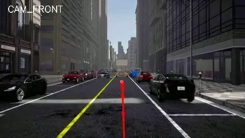
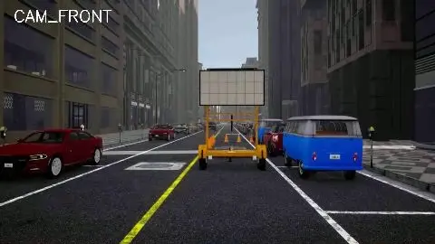
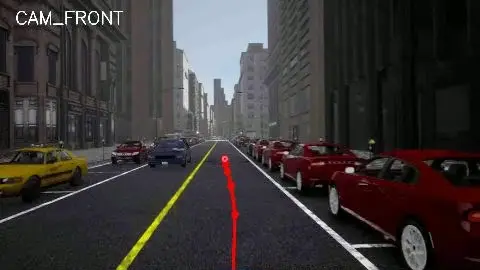
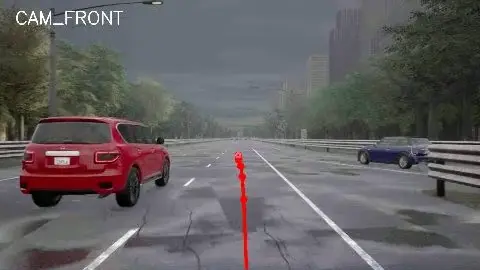
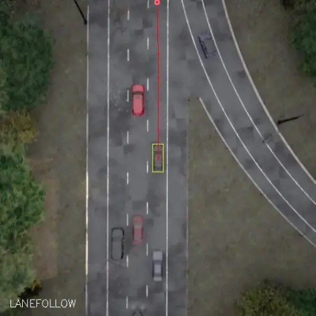
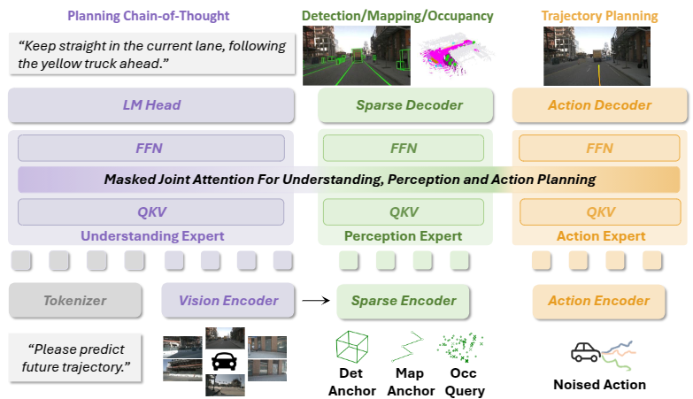
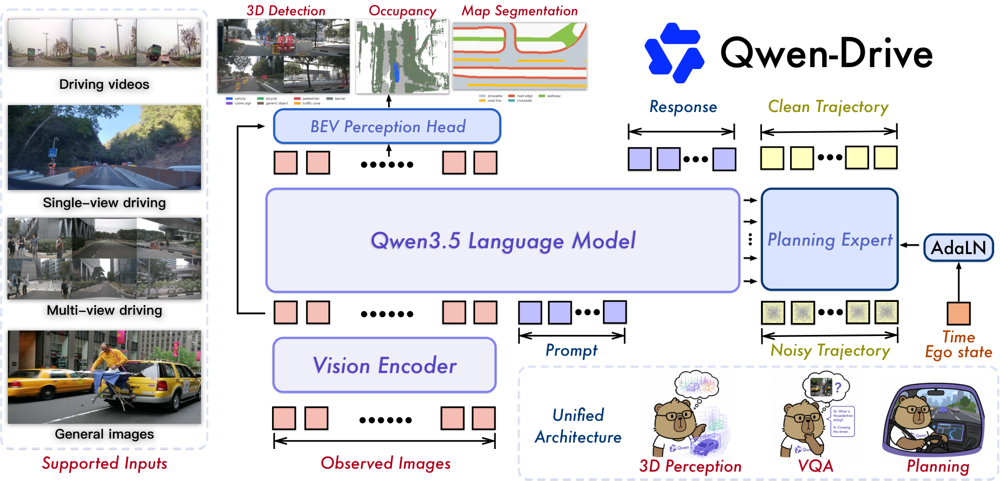

开源项目复现 / Qwen3-VL-2B / CARLA Bench2Drive
UniDriveVLA 自动驾驶复现
复现小米汽车与华中科技大学开源的 UniDriveVLA，使用官方 Base Stage 3 的 2B 权重，将六路环视图像、场景理解与轨迹规划接入 CARLA 闭环驾驶。
原项目源码 ↗- 复现目标
- 跑通视觉语言动作模型，从多视角输入到轨迹预测与车辆控制。
- 我的工作
- 完成服务器环境与评测配置适配，运行闭环场景并整理多视图预测、BEV 和评测结果。
- 运行结果
- 本批次 28 条评测记录中，18 条完成全路线；展示施工绕行、车辆切入与路口转弯。
从环视画面到闭环驾驶
- 左侧六视角：同步观察前方、侧方与后方交通；前视画面叠加模型输出的规划路径。
- 右侧 BEV：在俯视场景中对照自车、周车与预测路径，连接视觉输入和车辆实际运动。
- 阅读方式：先看前方交通变化，再看规划路径与自车运动如何衔接；支持全屏播放。
施工绕行 · 接近障碍并继续通行

4 s · 前方出现施工区域与提示设施。 
17 s · 接近施工提示，对照规划路径与可通行空间。 
29 s · 通过施工区域，继续沿路线前进。


车辆切入 · 观察周车与规划路径




路口转弯 · 路径随车辆推进
理解、感知与规划的统一模型
- 理解专家：以 Qwen3-VL 为基础处理视觉与语言信息，为驾驶任务提供语义特征。
- 感知专家：通过稀疏空间查询表达检测、地图和占用等信息，为规划提供空间先验。
- 规划专家：结合语义与空间特征生成未来自车轨迹，再由控制器执行。

框架对照：Qwen-Drive-1.0

我复现的闭环流程
- 采集观测：CARLA 提供六路相机图像、自车状态与导航指令。
- 模型推理：加载官方 Stage 3 权重，联合处理视觉、感知与动作信息，输出规划轨迹。
- 车辆执行：PID 将轨迹转为转向、油门与制动；执行后采集下一帧，形成闭环。
- 记录结果：同步保存多视图可视化与路线评分，将模型输出对应到具体驾驶场景。
复现运行与代表路线结果
CARLA Town12 · UniDriveVLA Base Stage 3 / 2B。以下三条路线与上方视频对应，均完成全路线，路线完成度与 Driving Score 均为 100。
| 路线 | 场景 | 完成度 | Driving Score | 状态 |
|---|---|---|---|---|
| 1833 | 施工占道 | 100% | 100.00 | Completed |
| 2286 | 高速车辆切入 | 100% | 100.00 | Completed |
| 2397 | 无信号路口转弯 | 100% | 100.00 | Completed |
- 批次规模：28 条评测记录，18 条路线完成度达到 100%。
- 复现产出：覆盖施工与事故绕行、路口交互、车流汇入、车辆切入等场景，形成可逐帧查看的闭环记录。
复现中的工程工作
- 部署与评测配置：适配 CARLA 路径、模型权重和单 GPU 评测入口，打通模型到模拟器的运行链路。
- 推理与结果分析：联合检查多视角图像、规划轨迹、BEV 与路线评分，将预测过程与车辆执行对应起来。
- 模型适配接口：在代码中扩展 Action Expert 的 LoRA 配置与 Stage 3 权重键映射，为参数高效适配提供训练入口。
原方法与框架图来自 UniDriveVLA 开源项目（Apache-2.0）；本页视频、分镜与路线成绩来自我的服务器复现运行。论文 · 原项目主页